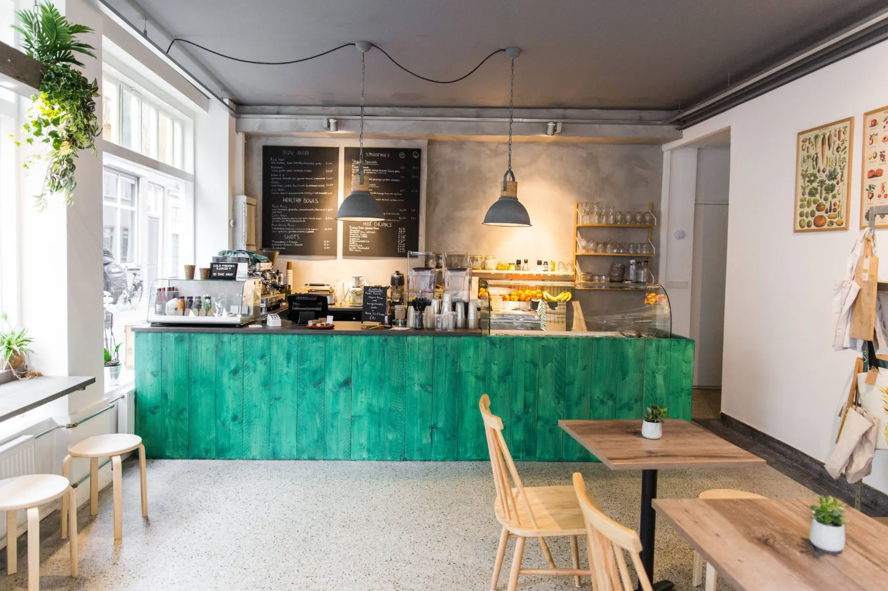
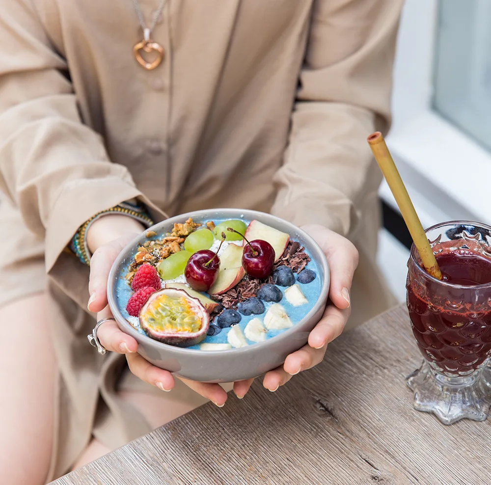
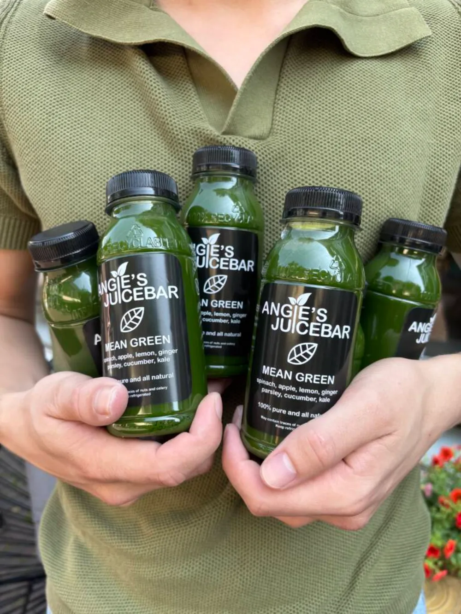
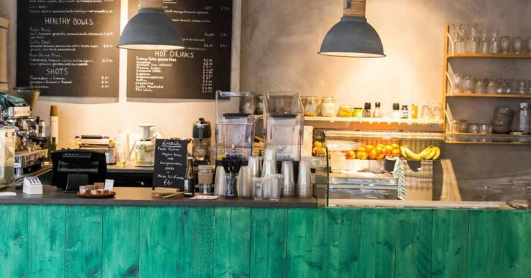

Smoothiebowls
Niet alleen een plaatje om te zien, maar ook een feestje om te eten. De açaibowl is de favoriet, maar we hebben nog veel meer combinaties, boordevol fruit en toppings. Perfect als gezond ontbijt, lunch of frisse traktatie tussendoor.
Choorstraat 7, centrum Delft
Bij Angie's Lunchcafé & Juicebar geniet je van gezonde, verse vegan lunches, açaibowls, wraps en juices. Of gewoon een coffeebreak in het centrum van Delft.


Wij geloven dat gezond eten vooral voedzaam en lekker moet zijn, met een juiste mix van ingrediënten.
Lunches, koudgeperste sapjes, smoothies, bowls, soepjes en detox-sapkuren: allemaal vega en vers bereid. Bestellen doe je aan de bar, of neem het mee.

Ons lichaam is elke dag bezig met het afvoeren van afvalstoffen die we binnenkrijgen via voeding en onze omgeving, zoals luchtvervuiling en stress. Meestal lukt dat prima, maar soms raakt dit natuurlijke reinigingsproces uit balans. Een detox is een manier om je lichaam tijdelijk rust te geven en te ondersteunen met verse, voedzame sappen. Zie het als een frisse start en een bewuste pauze voor je lijf.
Dan is een detox sappenkuur van Angie's echt iets voor jou.
Bestellen kan in de winkel, via de website of telefonisch. Levering vindt (nog) enkel plaats in Delft en omstreken. Vragen? Mail info@angiesjuicebar.nl of bel 06 44 66 46 35.
Op zoek naar iets fris, gezonds en feestelijks voor jullie event, kantoor of huisfeestje? Angie's Juicebar komt naar je toe met de lekkerste smoothies, sappen en smoothiebowls. Vers, kleurrijk en altijd met liefde gemaakt.
Niet alleen een plaatje om te zien, maar ook een feestje om te eten. De açaibowl is de favoriet, maar we hebben nog veel meer combinaties, boordevol fruit en toppings. Perfect als gezond ontbijt, lunch of frisse traktatie tussendoor.
Op locatie, ideaal voor bedrijfsborrels, sportdagen, beurzen of andere events. Ook te bestellen met eigen branding en logo.
Trek in iets hartigs? Belegde sandwiches en verse wraps met o.a. falafel, avocado, sla-mix en een frisse vegan yoghurtdressing. Lekker, voedzaam en 100% plant-based.
Huur onze Piaggio-tuktuk, die we op verzoek omtoveren tot een tropische smoothiebar. Of wil je een vaste smoothie-stand in jullie kantine of op een event? Wij zorgen voor alles: van styling tot levering en verse producten. Alles is maatwerk en met zorg geregeld. Je hoeft alleen nog maar te genieten.

Een aantal jaar geleden ontstond bij mij het idee voor Angie's Juicebar. Ik kwam met sappen in aanraking toen ik me na een ongeluk weer energiek en gezond wilde voelen. Omdat er in Delft nog geen sapjesbar was, wilde ik er zelf een openen.
In januari 2019 opende ik mijn juicebar in de Choorstraat 7 in Delft. Daar maken we gezonde lunches, koudgeperste sapjes, smoothies, detox-sapkuren, bowls en soepjes. Allemaal vega en vers (en met liefde) bereid.
“Mijn ziel zit echt in mijn zaak en ik ben trots dat het heeft uitgepakt zoals ik voor ogen had.”Angie
Angie's in het nieuws: interview ‘Duurzame Roadtrip’ op RTL4 en Videoland, “5 x gezonde hotspots in Delft” en “De verborgen parel”.
Afgelopen week een sappenkuur van 3 dagen bij Angie's Juicebar gedaan. Erg enthousiast over en kan het iedereen aanraden! Je krijgt veel informatie en tips over de kuur opgestuurd en Angie is goed bereikbaar voor vragen en advies. Sapjes waren super lekker en ik zit weer vol nieuwe energie :)!
Beste juicebar in Delft! De sapjes en shots zijn altijd vers. Angie laat je erg welkom voelen en weet ook veel over gezonde voeding. De vegan taartjes van Sue die ze heeft zijn ook zeker een aanrader.
Heerlijke smoothies en een super service! Echt een aanrader! Wij komen er zeker nog terug.
Voor onze gezellige lunchzaak in het centrum van Delft zoeken we een nieuwe collega. Je komt terecht in een kleine, hechte zaak met een focus op gezond, vers en vega. En: fijne werksfeer en leuke klanten!
| Maandag | gesloten |
|---|---|
| Dinsdag | 12.00 – 17.001 april – 1 oktober, kan afwijken |
| Woensdag – vrijdag | 10.00 – 17.00 |
| Zaterdag | 10.00 – 17.30 |
| Zondag | 12.00 – 17.00 |